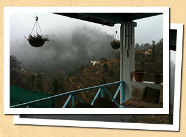
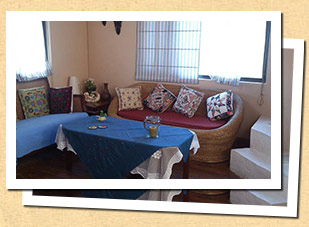
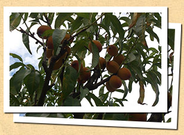
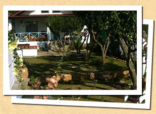

“If you are looking for a quiet getaway to a place where the only smoke is that emanating from kitchen chimneys, the only sounds are those of animals & birds, and all you see around you are fruit-laden trees, this Kumaoni hamlet will delight you. With great home-cooked meals using home-grown farm produce, it will be a holiday to remember”
~ Devika Aunty, hostess at Nathuakhan Village home
(Photo by Lisa Xing)
Please email us at untravel@indiauntravelled.com to plan and book your travels.
As you pull up on to the side of the highway, you can see a winding village path going uphill along the property boundary. Take this little climb and you come in full view of the cottage, nestled amidst fruit trees and vegetable patches and the splendid colors of the seasonal flowers. You are atop a hill and around you are the rolling hills, the lower reaches of the mighty Himalayas.
The cottage is warm and welcoming with a steaming cup of tea, much needed after the drive. Sit on the porch or under the shade of the plum tree and totally absorb your surroundings over your cuppa-chai. If the weather allows, you can set out for a walk down the village path to explore the forest trails that take you to the other side of the mountain. Alternately, you could just laze around with a book and more tea or coffee or watch a movie in the living room.
The Nathuakhan market is a kilometer walk from the home. And once at the market crossing, on a clear day, you can see the most breathtaking view ever: the snow-clad Himalayan peaks right from Nepal to Himachal! They are all there, Trishul, Nanda Devi, Panchachuli. Evenings can be turned into soirees if a big group of guests visit, with bonfire and bar-be-que and your drink to go with it.
Please email us at untravel@indiauntravelled.com to plan and book your travels.
 The Village Home is a 5-room plus attic cottage, with one room being occupied by the host.
Mustard Room: a double bed/ twin bed room with attached bath. Can accommodate upto 3 adults.
Vanilla Room: a double bed with attached bath. This room is in the main level of the house, adjacent to the living/ dining rooms.
Cinnamon Room: a cozy room with an attached bath, ideal for a couple. This room is accessed through the heart of the house- the kitchen, but offers complete privacy and excellent views.
Rosemary & Thyme Suite: Rosemary is the living space and Thyme the bedroom, bath attached to the Thyme room. The unit can accommodate 4-5 adults, with extra beds in both rooms.
The Attic: perfect for a group of 4-5 friends. The main attic space can sleep 3-4 adults and the covered sit-out 1 adult. The attic has an attached bath.
Please email us at untravel@indiauntravelled.com to plan and book your travels.
 The hosts love food and take great effort in ensuring that the guests get good home-cooked meals during their stay. The hostess discuss meal preferences with guests beforehand in order to arrange food produce that is not readily available in the village. Most of the meals are prepared by the host herself.
Breakfast is a hearty affair, complete with porridge/flakes, eggs to order, bread, home-made & off-the-shelf jams and spreads, juice, stuffed paranthas and even poha, idlis or upma. Hot masala chai or freshly percolated filter coffee is served.
Lunch is typically an Indian vegetarian spread- Kumaoni/ Punjabi/ Bengali/ Gujrati. The spread consists of a daal, vegetables, yogurt, salad, rice & chapati/ puri.
For dinner ( Veg/Non Veg) Indian, Continental, Mediterranean or Chinese cuisine is served. It starts with soup, main and side dishes and dessert. Bar-Be-Que too can be arranged.
Please email us at untravel@indiauntravelled.com to plan and book your travels.
One can choose to spend his time hiking on short treks around the village or just live the village life. Spend time chatting with your hosts over tea, meet the village folk and learn about their simple yet happy lives. If you are in a mood to indulge, assist the villagers in milking cows, working in the farms and plucking fruits in the orchards. Or you may choose to accompany your hostess in teaching English to the village children.
Activities:
Please email us at untravel@indiauntravelled.com to plan and book your travels.
INR 2250 per person per night including breakfast and taxes.
Children (8-14 years): INR 1000 per night
Children below 8 years are accommodated free of cost.
Meals:
Lunch: INR 450 per person
Dinner: INR 550 per person
Please email us at untravel@indiauntravelled.com to plan and book your travels.
Nathuakhan is located a scenic 2.5-hour drive from Kathgodam, the nearest railway station. The popular hill station of Mukteshwar is a short drive away. The nearest domestic and international airport is in Delhi.
Many of us have pre-conceived notions about rural India. Leave them behind, travel with an open mind, and you'll be pleasantly surprised with what you find.
Please email us at untravel@indiauntravelled.com to plan and book your travels.
Please email us at untravel@indiauntravelled.com to plan and book your travels.
“ Me and my mum really enjoyed our stay at Devika's homestay! Devika is super sweet and she made us very welcome in her home. The food was excellent! I would recommend this place to everyone who wants some peace and quiet in the mountains and some experience of local cuisine.
Thank you for recommending this homestay to us! ”
~ Aiste Radziunaite, travelled with her Mom in May 2017
“ It was very lovely. Enjoyed our stay at Narendra's farmhouse. Staff was very helpful. ”
~ Ananya Misra, travelled with mother in April 2017
“We had a nice time. Warm hospitality, comfortable unpretentious property, and excellent food were the highlights. A little more proactive guidance on the things to do when at the property would make the stay even more enjoyable. Looking forward to explore more India untraveled properties in the future. Thanks and keep up the good work!
~ Rajat Bhatia, travelled in November 2016
“It was very comfortable. Devika aunty and her staff were just what we needed. She's warm and makes excellent food. Being in the suite downstairs gave us privacy and a good view of the hills. The property is aesthetically done, matching my sensibilities. The attention to detail is what stole my heart, the refilling of tea and coffee every morning, the flexibility of breakfast hours (even though I saw it got inconvenient for her sometimes), sensitivity to privacy but openness to conversations.
I'll be definitely recommending this place to my friends and family.
Thank you“
~ Neetu Sarin, Travelled in June 2015
“The home stay was just what was needed - cozy and quaint and away from all the noise and crowd. The home is lovely and the accommodations for us surpassed our expectations completely. Loved the fact that there were 2 big and spacious rooms each with their individual washroom. Each of us had our own space and that was the whole idea for the getaway.
Especially love the small living area that was made at the end of the rooms with glass windows and a beautiful view - the perfect place to read or work!
Aunty was a wonderful host and the 2 ladies there to help put with the meals and cleaning were extremely courteous and pleasant. Despite being a home stay in a small village it was surprising that rather than a fixed menu, we were offered a variety of cuisines to choose from for lunch and dinner !
The food prepared was delicious and catered to our preference and taste. Got to experience local Kumaoni dishes as well and loved the flavor to their food. One has the option to borrow books or dvds or just sit out on the porch and enjoy the view over coffee and conversation.
Piya was extremely helpful with directions and even suggesting pitstops for us along the way. Day 2 we drove up to Mukteshwar and Binsar and they called to make sure we were safe considering it was dark while we were on the way back.
Overall, a beautiful and serene home stay with wonderful hosts, comfort food and a breathtaking view“
~ Sonali Dyal, Travelled in May 2015
“Right from the time we entered to the time we left, there was no moment that we did not enjoy. Devika Aunty is a gem of a person. Her hospitality and her politeness makes her the best host.
The place is BEAUTIFUL and it has all the ingredients to make your stay, a memorable one!! The food is the main USP. Devika Aunty ensures the variety and that you eat the mouth watering food till you have no more space.. And boy!! I wish I could eat more!!
Our stay was amazing and a memorable one. Thank you all.. So much!!“
Please email us at untravel@indiauntravelled.com to plan and book your travels.
Devika Aunty is largely involved with teaching the village kids (mostly English). Besides, being an avid knitter, she has over time employed the neighborhood women to knit mufflers, caps, leg warmers, socks etc. and has been able to sell these to visitors/guests. The home also harnesses rain water and has initiated talks with local authorities to facilitate proper garbage disposal to keep the surroundings green, which otherwise can becomes an eye sore. The Village home is run by an all-women team :) So it is a step toward empowering women! The organic farm at the village home uses minimal pesticides and no chemicals, growing everything from vegetables and fruits to herbs, and supplies most of the food served to travellers; the rest is sourced from local growers/ neighbors.
Below are some tips to travel responsibly while in Nathuakhan:
Please email us at untravel@indiauntravelled.com to plan and book your travels.
Please email us at untravel@indiauntravelled.com to plan and book your travels.
© Copyright India Untravelled 2015. All Rights Reserved.
Maintained by Axisfusion.in
{kind=link}
{kind=link}
{kind=link}
{kind=link}
{kind=link}
{kind=link}
{kind=link}
{kind=link}
{kind=link}
{kind=link}
{kind=link}
{kind=link}